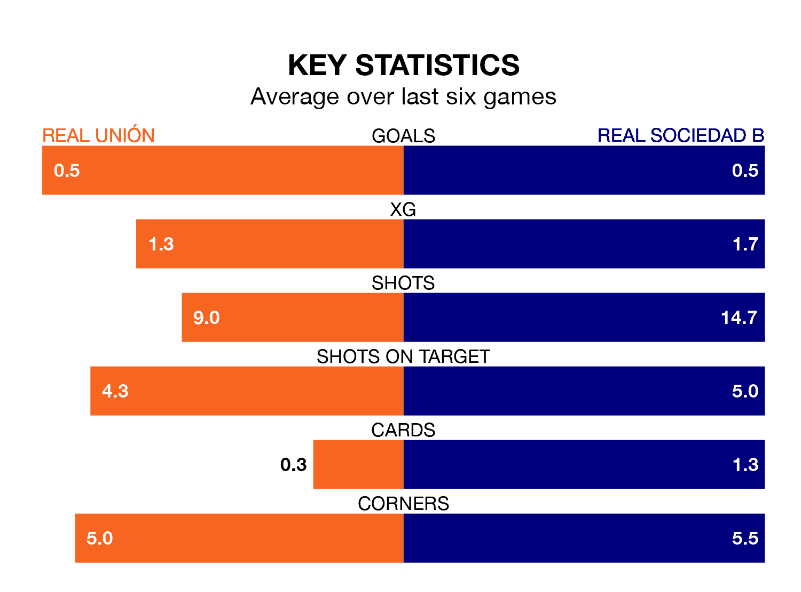

Real Unión face Real Sociedad B at the Estadio Gal on Sunday looking to secure a first win in seven Primera Division RFEF Group 1 games.
Unión have lost two and drawn four matches since they last earned three points – against SD Tarazona on January 27.
They face a Sociedad B side who have won just one and drawn one over that time.
With 33 goals in 27 games so far this season, Unión are scoring more than average in the league with 1.2 goals per game. But they are conceding more than average too, letting in 35 goals at a rate of 1.3 per game.
Sociedad B, meanwhile, are average scorers, with 1.0 goal per game. They have also conceded 1.0 goal per game.
In Alberto Solís Gómez, the hosts have one of the league's sharpest shooters so far this season. He has notched eight goals in 24 appearances, to sit second in the scoring charts.
His goal rate of one every 257 minutes is slightly quicker than that of Ekain Azkune Astarloza, the away team's top scorer with a goal every 194 minutes, and a total of seven goals in 19 games.
In the last 10 years, Unión and Sociedad B have played each other on 16 occasions. Unión won six of them, Sociedad B five, and they drew five times.
On average, Unión scored 1.5 goals and Sociedad B 1.2 in those matches.
Their last meeting was on December 17, when they played out a 2-2 draw.
Unión are 13th in the table after 27 games, of which they have won eight and drawn eight, earning 32 points.
Sociedad B are two places ahead of Unión in 11th, with eight wins and 11 draws putting them on 35 points.
Unión's last match was on March 9, a 1-1 draw against Rayo Majadahonda, with Antón Escobar Tapias getting the goal for Unión.
Sociedad B lost 2-1 against UE Cornellà last time out, also on March 9, with Alberto Dadie Izagirre on the scoresheet.
Updated: 15:10 (UTC), 15/03/24